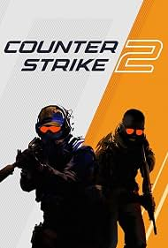

¿Qué es Counter Strike 2
Counter-Strike 2 es un videojuego de disparos táctico en primera persona multijugador de 2023 desarrollado y publicado por Valve. Es la quinta entrega principal de la serie Counter-Strike. Desarrollado como una versión actualizada de la entrada principal anterior, Counter-Strike: Global Offensive (2012), se anunció el 22 de marzo de 2023 y se lanzó el 27 de septiembre de 2023 para Windows y Linux, reemplazando a Global Offensive en Steam. Al igual que su predecesor, el juego enfrenta a dos equipos, los antiterroristas y los terroristas, en varios modos de juego basados en objetivos. Counter-Strike 2 presenta importantes mejoras técnicas con respecto a Global Offensive, incluido un cambio del motor de juego Source a Source 2, gráficos mejorados y una nueva arquitectura de servidor. Además, muchos mapas de Global Offensive se actualizaron para utilizar las funciones de Source 2, y algunos mapas recibieron revisiones completas. Tras su lanzamiento, Counter-Strike 2 recibió críticas generalmente favorables de los críticos. Por el contrario, la recepción de los jugadores fue mixta; Las críticas se dirigieron a la eliminación de Global Offensive de Steam, la degradación del rendimiento del juego y la eliminación de varias características que habían estado presentes en Global Offensive. Como resultado, Counter-Strike 2 recibió miles de críticas negativas de usuarios en Steam, lo que lo convirtió en uno de los títulos de Valve con la calificación más baja en la plataforma.
